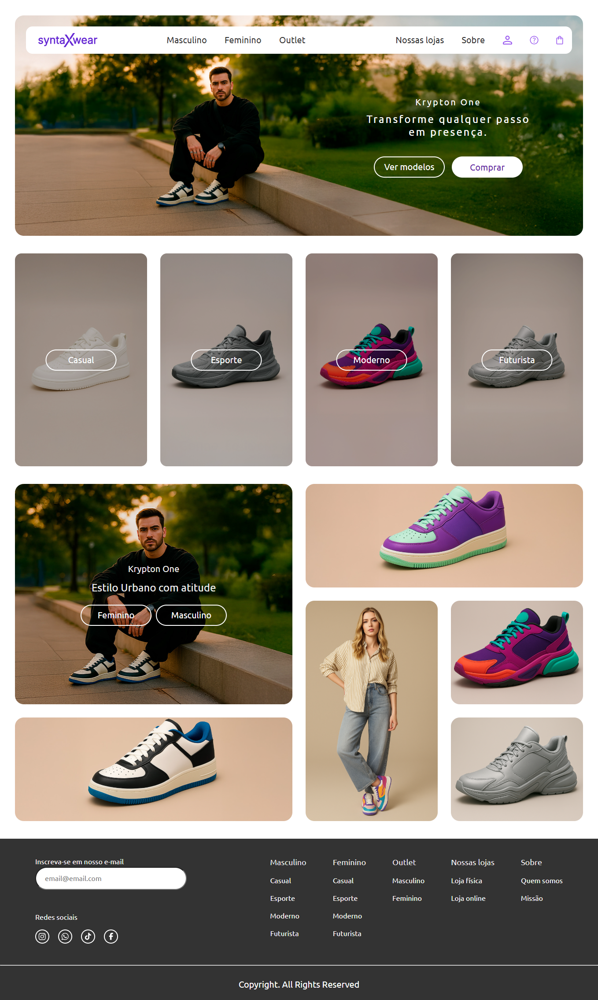
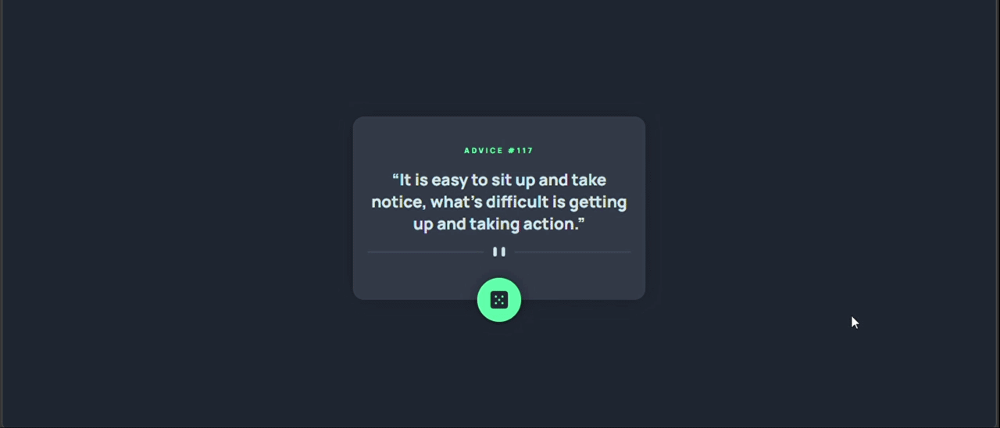
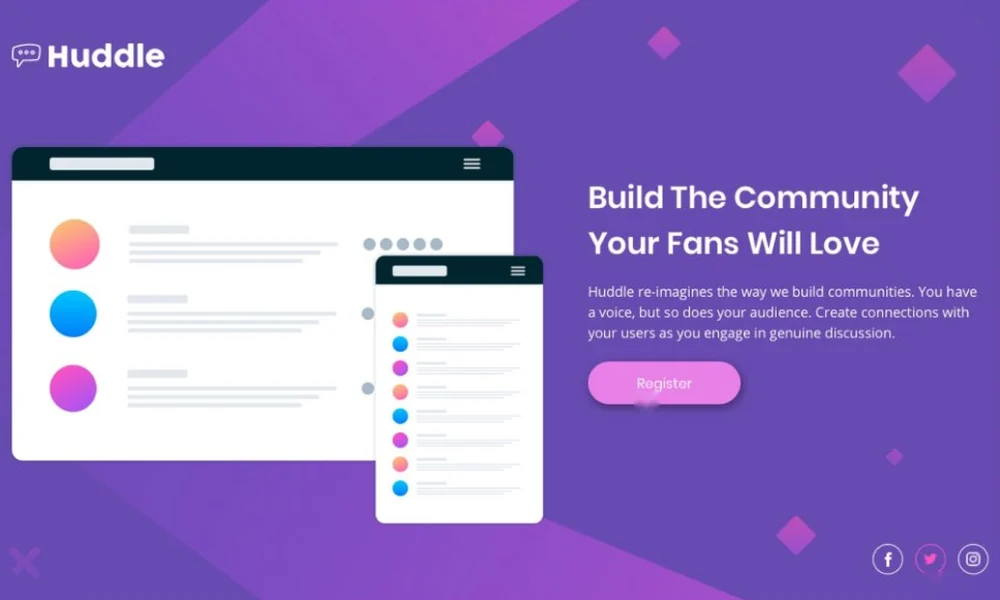

Trabalhos pessoais e desafios de desenvolvimento
Desenvolvedor web em transição de carreira, apaixonado por tecnologia e focado em criar interfaces modernas, sempre priorizando responsividade e uma ótima experiência para o usuário.
Disponível para oportunidades remotas e presenciais
Experiências modernas, funcionais e responsivas
Aberto a oportunidades na área de tecnologia
Sobre mim
Meu nome é Victor Lima, sou formado em Administração, com especializações em Informática, Inglês e Produção Cinematográfica. Atualmente, estou em transição de carreira para a área de desenvolvimento de software, dedicando-me aos estudos de programação e ao desenvolvimento de projetos. Minha trajetória nas áreas administrativa, hospitalar, audiovisual e marketing digital fortaleceu habilidades como análise de processos, resolução de problemas, organização e adaptação. Busco aplicar esse conhecimento para criar soluções inovadoras e evoluir continuamente na área de tecnologia.
Projetos
Projetos e conquistas na minha jornada como desenvolvedor
- JavaScript
- HTML5
- CSS3
- GIT
Certificação Dev em Dobro
Semana do Zero ao Programador Contratado
10 horas de treinamento intensivo em HTML, CSS e JavaScript, incluindo projeto prático e refatoração com Inteligência Artificial.
Clone da página oficial do GTA VI
Recriação da página oficial do jogo, com a grade de personagens, o logotipo em destaque e as informações de lançamento. O objetivo foi reproduzir o layout com fidelidade e praticar CSS.
- HTML5
- CSS3
- JavaScript

SyntaxWear
Página inicial de uma loja fictícia de calçados, com menu de navegação, banner principal e vitrine de categorias: Casual, Esporte, Moderno e Futurista.
- HTML5
- CSS3
- JavaScript

Gerador de Conselhos
Aplicação que mostra um conselho aleatório a cada clique no botão do dado. Desafio do Frontend Mentor para praticar consumo de API e manipulação do DOM.
- HTML5
- CSS3
- JavaScript
- API

Desafio da Landing Page Huddle do Frontend Mentor
Landing page com ilustração, texto de apresentação e botão de cadastro, construída a partir de um desafio do Frontend Mentor, com layout responsivo.
- HTML5
- CSS3
- Layout responsivo
Audiovisual
Em breve, meus trabalhos de produção audiovisual estarão aqui.
Contato
Vamos conversar sobre oportunidades, ideias ou projetos?
Estou aberto a novos desafios e a boas conversas sobre tecnologia. Escolha o canal que preferir.